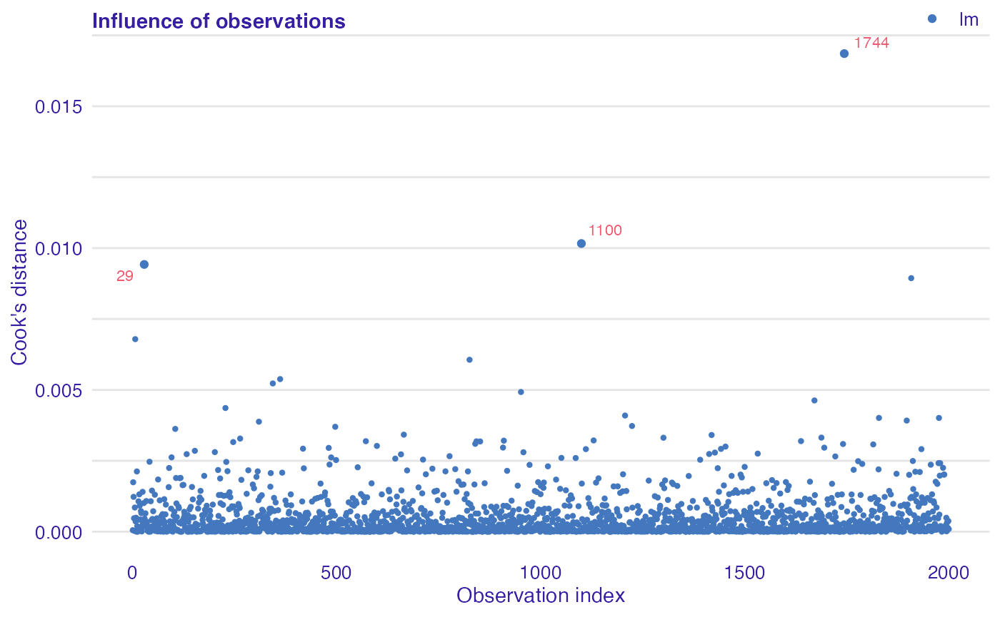

vignettes/observation_influence_audit.Rmd
observation_influence_audit.RmdObservation influence audit, i.e. the impact of individual observation on a model.
To illustrate application of auditor we will use dataset “dragons” available in the DALEX package. The dataset contains characteristics of fictional creatures (dragons), like year of birth, height, weight, etc (see below). The goal is to predict the length of life of dragons (a regression problem).
## year_of_birth height weight scars colour year_of_discovery
## 1 -1291 59.40365 15.32391 7 red 1700
## 2 1589 46.21374 11.80819 5 red 1700
## 3 1528 49.17233 13.34482 6 red 1700
## 4 1645 48.29177 13.27427 5 green 1700
## 5 -8 49.99679 13.08757 1 red 1700
## 6 915 45.40876 11.48717 2 red 1700
## number_of_lost_teeth life_length
## 1 25 1368.4331
## 2 28 1377.0474
## 3 38 1603.9632
## 4 33 1434.4222
## 5 18 985.4905
## 6 20 969.5682First, we need models to compare. We selected linear regression and random forest because of their different structures. Linear regression model linear relationships between target response and independent variables. While random forest should be able to capture also non-linear relationships between variables.
# Linear regression lm_model <- lm(life_length ~ ., data = dragons) # Random forest library(randomForest) set.seed(59) rf_model <- randomForest(life_length ~ ., data = dragons)
Analysis begins with creation of an explainer object with explain function from DALEX package. Explainer wraps a model with its meta-data, such as dataset that was used for training or observed response.
lm_exp <- DALEX::explain(lm_model, label = "lm", data = dragons, y = dragons$life_length) rf_exp <- DALEX::explain(rf_model, label = "rf", data = dragons, y = dragons$life_length)
Next step requires creation of model_cooksdistance objects of each explained model. In the case of models of classes other than lm and glm, the distances are computed directly from the definition, so this may take a while. In this example we will compute them only for a linear model.
library(auditor) lm_cd <- model_cooksdistance(lm_exp)
Cook’s distance is used to estimate of the influence of an single observation. It is a tool for identifying observations that may negatively affect the model.
Data points indicated by Cook’s distances are worth checking for validity. Cook’s distances may be also used for indicating regions of the design space where it would be good to obtain more observations.
Cook’s Distances are calculated by removing the i-th observation from the data and recalculating the model. It shows how much all the values in the model change when the i-th observation is removed.
plot(lm_cd)
